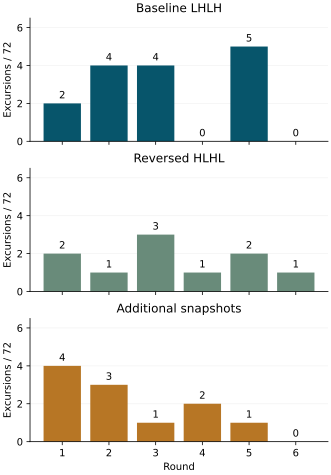

Returned observations
All 3888/3888 acquisitions and 32700 journal sectors were recovered from two matching 64 MiB reads, with four empty reserved sectors and no journal-integrity issues. Acquisition took 143.470 seconds; the final recording section was reached after 1430.717 seconds (23 minutes 50.717 seconds). All six block restorations, final restoration and pin release reported success. These counters measure execution through the final section, not the full powered session.
All six mixed-reference calibrations were accepted. Target recognition produced 431 correct, zero wrong, one rejected and zero unavailable decisions out of 432. The complete diagnostic criterion passed; the complete-recognition criterion did not. These targets use request 91, and do not establish equivalent performance at all six states.
| Read condition | Inside / above interval | Correct / wrong / rejected |
|---|---|---|
| Baseline LHLH | 417 / 15 | 143 / 0 / 1 |
| Reversed HLHL | 422 / 10 | 144 / 0 / 0 |
| Additional snapshots | 421 / 11 | 144 / 0 / 0 |
Each condition supplies 432 raw target readings and 144 median decisions. No target reading was below its interval or unavailable. The 36 above-interval readings were code 2824 (10), 2832 (11), 2833 (1) and 2848 (14). The additional code 2833 shows that excursions are not confined to the three codes observed in the preceding return.

The within-round differences from baseline were 0, −3, −1, +1, −3, +1 for reversed order, and +2, −1, −3, +2, −4, 0 for additional snapshots. Both median differences were −0.5 reading per round, with mixed signs. The aggregate counts do not establish a consistent improvement or equivalence between conditions.
Rejected median
In round 3, baseline readings at zero-based ordinals 1824–1826 were 2848, 2824 and 2816. Their median, 2824, exceeded the frozen interval 2789–2821 by three codes and was rejected. The preceding reading at ordinal 1823 was also 2848; the following reading was 2814, inside the interval. Every duplicate low/high pair agreed, including these excursions. No classifier limit was adjusted after acquisition.
The preceding counter-window run produced 430 correct and two wrong medians; this return produced 431 correct and one rejection. Different read conditions and separately acquired calibration prevent attributing that difference to a specific improvement.
What repeated reads retained
Both original result pairs agreed in all 3888 acquisitions. All 432 additional groups supplied three complete low/high snapshots, and every snapshot equalled its original result. The additional group occupied 13.348–13.484 ms, with a median of 13.374 ms.
Eleven above-interval readings occurred in this condition. All eleven remained unchanged in every extra snapshot, and all eleven were followed by an inside-interval reading on the next triggered acquisition at the same requested setting. Across all 426 available within-block successors, the raw value changed 356 times and remained unchanged 70 times. The final reading in each of the six blocks has no within-block successor.
This establishes observed result retention during the extra reads. It does not isolate the trigger as the cause of the subsequent changes: cleanup, operating guard, voltage-control checks, settling and a new trigger intervene. The selection operation checks the existing setting and writes only when a change is needed. Stable repeated bytes remain compatible with a retained conversion, a repeatable read-path error or an analog event already represented in the retained value. Independent conversion freshness remains unproven.
Read timing and operating observations
Recorded counters follow LHLH in the baseline and snapshot conditions and HLHL in the reversed condition. Across the target readings, the median first-to-fourth byte-completion spans were 6.701, 6.696 and 6.701 ms respectively. These are spans between completion timestamps, not individual transaction durations.
| Read condition | Whole-call minimum / median / maximum (ms) |
|---|---|
| Baseline | 34.891 / 34.928 / 40.022 |
| Reversed | 34.889 / 34.928 / 39.965 |
| Additional snapshots | 48.254 / 48.309 / 53.367 |
All 24 scheduled 1 ms counter windows had ordered endpoints, accepted controls and sufficient duration. Every bracket contained 1.5 GHz; their combined extent was 1.498891–1.501137 GHz. Original per-sample guard estimates ranged from 1.499970 to 1.500028 GHz. No guard failed, so neither failure-triggered window was invoked. The cause of the earlier near-1 GHz stop remains unresolved. The counters establish these local intervals under the reported 54 MHz timebase; they do not calibrate absolute frequency or supply an ERA anchor.
Interpretation and next question
Reversing result-byte order did not remove excursions, and further reads before cleanup did not recover a different value. Neither intervention currently justifies changing the baseline acquisition or recognition rule. Zero added acquisition wait remains the reference.
A useful next comparison would vary the held request across nearby settings, initially 90, 91 and 92, with balanced order and otherwise unchanged acquisition. The question is whether excursions remain associated with a similar electrical condition or with particular raw-code regions, including the low-byte rollover between 2815 and 2816. This is an exploratory hypothesis suggested by the returned codes, not an established mechanism.
Such a comparison must retain separate reference distributions for each request, report raw trajectories and all failures, and avoid treating the request-91 recognition band as a valid band for its neighbours. Persistence at several settings would weaken a narrowly localized rollover explanation. Concentration near one code region would motivate a dedicated conversion/read-path test, while leaving independent analog accuracy unresolved. The held-request dependence protocol implements this comparison with balanced order and independent local reference and validation readings. Its returned observations show departures at all three held requests and substantial variation in local reference width.
Evidence and verification
Return 20260927-052308 matches preparation D965924952CE. Returned-image SHA-256: 68501b01123c0f9137ce3b38ec12a857df54db59076dd71e66bdc623256d9d09. Eight returned-evidence checks reproduce the records, counts, exceptional median, physical read ordering, retained snapshots and counter observations; they also reject corrupted or unfinished journals. These checks assess recorded evidence and do not supply an independent analog measurement.
The partition geometry, MBR and both boot files match the preparation, and the FAT copies agree. Seven sectors outside the journal differ in allocation metadata and a System Volume Information directory. Those changes are consistent with host metadata activity; this comparison does not establish their writer or time.
Question and rationale
The preceding return retained 44 above-interval target readings at codes 2824, 2832 and 2848, two wrong target medians and agreement between every repeated byte pair. The acquisition completed near 1.5 GHz. Slower result reads showed no consistent excursion reduction. The present question is whether the observed result depends on byte order, changes during repeated reads without another trigger, or persists into the following newly triggered acquisition.
Register update and read-order behavior remain unqualified. No result-latching or address-auto-increment behavior is assumed. The original single-register transactions are retained; the compared sequence uses only the already exercised result addresses.
Acquisition protocol
Six rounds retain 216 nominal references, 216 interleaved mixed references and three blocks of 72 target readings at request 91 per round: 3888 acquisitions, 1296 target readings and 432 target median decisions. References retain the baseline procedure and are frozen before the target blocks.
- Baseline: read low, high, low, high.
- Reversed: read high, low, high, low. Values remain stored under their actual register identity. The native result uses the first low/high pair; counters retain the actual physical read order.
- Additional snapshots: retain baseline reads, then read three further low/high pairs before cleanup and before any new trigger. Preserve all six extra octets, individual availability and transfer failure, with counters around the extra-read group. The added snapshots never replace the original recognition input.
Arm orders are 0,1,2; 1,2,0; 2,0,1; 0,2,1; 1,0,2; 2,1,0. Baseline and reversed conditions issue the same number of result transactions at the original 10-microsecond minimum GPIO dwell. They have no deadline padding; actual read and whole-call timing are reported. The additional-snapshot condition measures the effect of extra read activity as well as within-acquisition consistency. Each following reading performs the existing new trigger at the same requested setting.
Voltage limits 90–105, guard 2, 1 ms pre-ADC settling, zero added pre-acquisition wait, trigger/status sequence, frozen classifiers and restoration remain unchanged. Hardware request numbers and raw codes in this account are decimal; register addresses use hexadecimal.
Operating-condition observations
The original operating guard runs before every sample. At round-relative ordinals 0, 216, 432 and 647, an additional ordered 1 ms counter window follows a successful guard, before any new PMIC access. These 24 locations cover nominal reference, mixed reference and target positions. The original guard interval remains distinct from the additional window; the latter does not retrospectively bracket the former.
If the per-sample guard returns frequency status 4, retain its complete report and acquire at most two counter-only windows of 1 and 10 ms before returning the original failure into the existing restoration path. No further target-voltage request or ADC acquisition follows that failed guard; restoration retains its existing procedure. Thermal or timebase failure skips these windows. Each additional window retains the existing bounded counter operation. Failure in an added normal window stops the sample with a distinct recorded diagnostic failure and continues into restoration. The extra observations add workload and can change the condition being observed.
Declared assessment
Reconstruct every native result and median from its recorded bytes and frozen references. Report correct, wrong, rejected and unavailable decisions separately for each arm and round. Compare each treatment's raw excursion count with baseline within the same round; retain all six differences and their positions. No target observations update calibration, no filtering is added, and missing outcomes stay in the denominators.
For additional snapshots, compare each available pair with the original result and the next triggered reading within the same held-request block. Report unchanged, changed and unavailable cases, including changes among the extra pairs. Changed values without a new trigger would challenge result stability under that read sequence. Stable extra reads would leave shared read errors and ADC behavior unresolved. Changing only after a new trigger supports that observed relation, without independently timestamping an analog conversion.
Report physical byte order and timing independently of recognition. Reversed-byte success must not be inferred merely from a reconstructed plausible value. Counter-window integrity, complete acquisition, complete target recognition and within-acquisition consistency are separate criteria. Preserve raw excursions and failed calibrations even when the diagnostic acquisition succeeds.
SEIGRASM execution and recording
SEIGRASM instructions, evidence reader and supplied-device checks define the executable procedure and its assessment.
The implementation extends literal SEIGRASM operations around the existing acquisition, register reads and operating guard. PC packaging places their instruction words and contexts; it neither compiles the target from another language nor supplies target execution. The existing boot firmware still provides initial entry and hardware state.
Configuration schema 22 identifies this sequence. Section 9 retains a 32-word header, 432 fixed slots of three words for extra snapshots, and 26 counter windows of sixteen words: 1744 words in 175 sectors. The extra-octet word packs six octets in bits 0–47, six availability bits in 48–53, two zero bits and an eight-bit failure status in 56–63. Each group has start/end counters. Fixed slot identity supplies round and reading. Journal geometry remains unchanged, with at most 32700 of 32704 reserved sectors used.
Interpretation limits
Byte-order dependence, snapshot changes and counter associations can narrow the location of a failure; none alone identifies its electrical cause. The same ADC and register path supplies these observations. Internal activity, analog accuracy, independent conversion freshness and absolute clock accuracy remain unqualified. Nominal six-state references do not make request-91 target outcomes representative of every state.
Decisions supported by the return
An order-dependent change would prioritize result-register and read-sequence behavior. Changes among extra snapshots before another trigger would prioritize result stability and repeated-read effects. Excursions that persist across both byte orders and all same-trigger snapshots would leave the ADC, analog condition and shared read path as competing explanations. A guard stop followed by different longer-window estimates would justify a dedicated guard-estimator comparison; those later windows cannot overturn the original stop.
A single boot is an initial comparison. Consistent effects across its balanced rounds would select a confirmatory repeat. Neither a null result nor complete recognition in this boot would establish independent conversion freshness or general cross-boot reliability.
Preparation
Preparation D965924952CE supplied this completed run. All 343 supplied-device checks passed with unchanged source hashes. The complete image was verified in 4096 write blocks and two full readbacks, followed by recorded media ejection. The power window is 26 minutes, allowing for the complete SD journal; the preceding return reached its final recording section after approximately 24 minutes. The frozen pre-acquisition protocol is preserved in the preparation archive.
Preparation and parameters · Instruction comparison · Software validation · SD verification